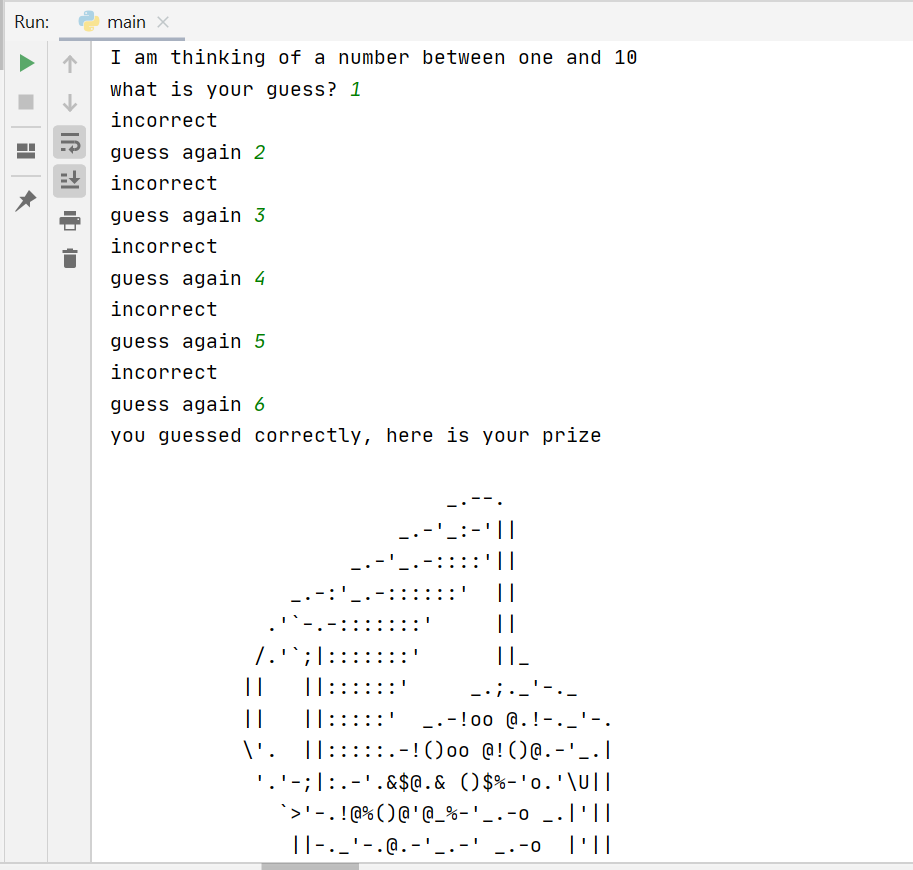

In this task you will need to fill in the gaps to crete a program that generates a lucky number between 1 and 10 and allows the user to keep guessing until they get the number correct
You can use the previous exercises to help you with this. An example of the output is as follows
